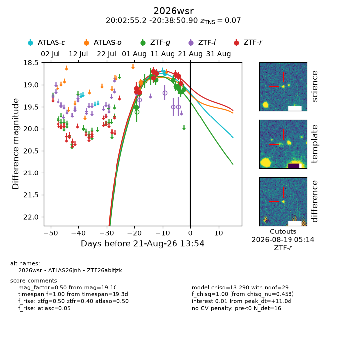
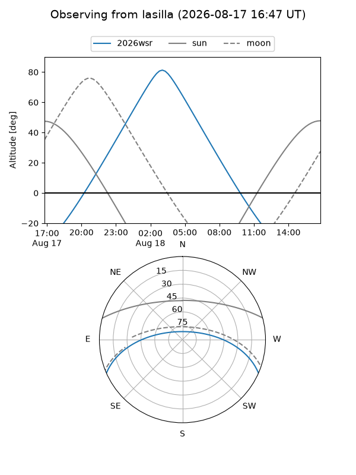
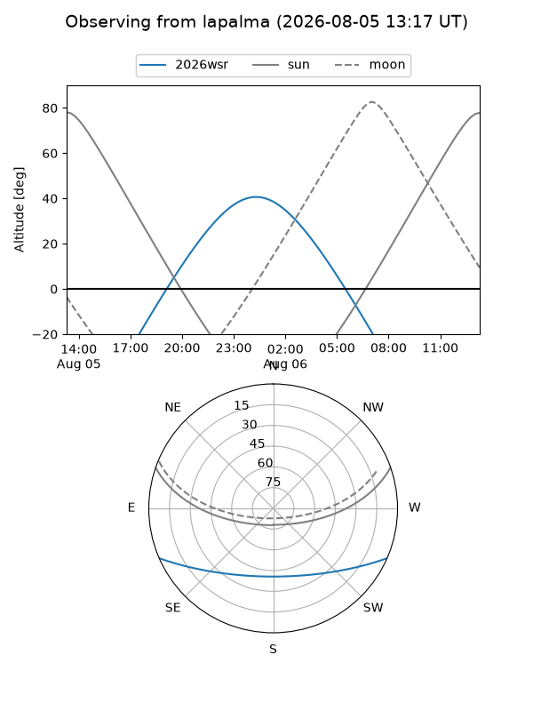
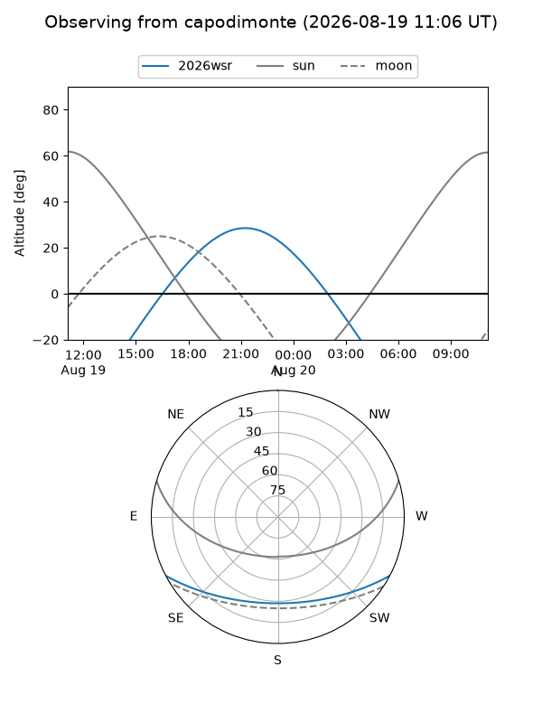
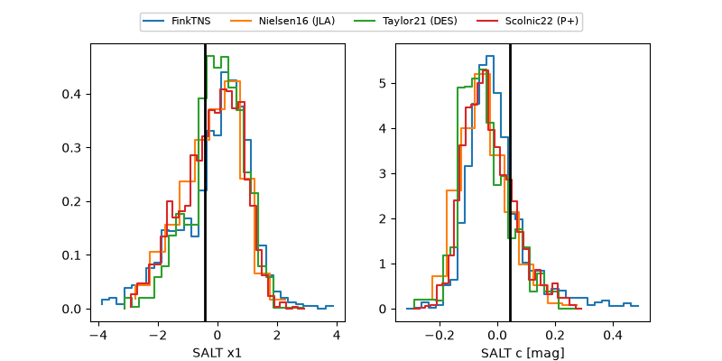

2026wsr
Target 2026wsr at 2026-08-21 13:58
Aliases and brokers:
FINK-ZTF: ztf.fink-portal.org/ZTF26ablfjzk
Lasair-ZTF: lasair-ztf.lsst.ac.uk/objects/ZTF26ablfjzk
ALeRCE-ZTF: alerce.online/object/ZTF26ablfjzk
YSE-PZ: ziggy.ucolick.org/yse/transient_detail/2026wsr
TNS name: wis-tns.org/object/2026wsr
Direct TNS query: direct search
alt names
ZTF26ablfjzk (ztf,fink_ztf)
2026wsr (tns,yse)
ATLAS26jnh (atlas)
Coordinates:
equatorial (ra, dec) = 300.7298,-20.64747
equatorial (HMS+DMS) = 20:02:55.16,-20:38:50.90
galactic (l, b) = (21.3276,-24.60442)
Flags:
TNS type: SN Ia
TNS redshift: 0.0700
peak dt: +11.0
Photometry:
last atlasc=18.74, atlaso=18.95, ztfg=19.10, ztfr=18.97
2 atlasc, 1 atlaso, 13 ztfg, 11 ztfr detections
Lightcurve

Visibility



Additional plots
